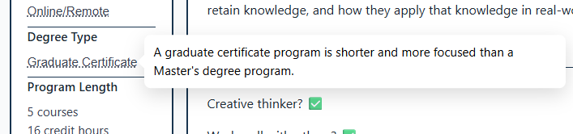

Project Overview
This project is a recruitment-focused web experience for Metro State University’s Learner Experience Design Graduate Certificate. It focuses on how program information is communicated, especially to working adults who are considering a return to school. The goal was to design an experience that helps prospective students quickly understand what the certificate is, how it fits into a working adult’s life, and whether it is a realistic option for them.

Problem & Audience
The core problem this project addresses is that the existing informational webpage assumes a level of comfort with academic language, which can feel intimidating or exclusionary to working adults. While program details were present, the experience did not account for users navigating uncertainty, limited cognitive energy, or doubts about belonging. The intended audience includes adults balancing work and personal responsibilities who need clarity, reassurance, and realistic information to make an informed decision.

User Insights
User insights for this project were informed by an interview with a student who had recently navigated the decision to enroll in the Learner Experience Design Graduate Certificate. She emphasized that remote classes were essential rather than optional and expressed concerns about belonging, age, and a perceived lack of technical experience. A key moment from the interview: “We designed a functional prototype. I wouldn’t have known what these words even meant six months ago.” This highlighted how a student’s perceived technical ability can discourage them before they begin. These insights directly shaped the project’s emphasis on plain language, contextual explanations, and a reassuring tone that supports growth rather than assuming prior expertise.
Communication Approach
I approached the page as if it were written by a guidance counselor for adults: supportive, honest, and non-coercive. This shaped my choices around tone, structure, and content, including the use of plain language, explicit labeling, and reassurance without exaggeration. Rather than marketing the program, the page prioritizes helping users make a realistic, informed decision based on their own needs and constraints.
Access & Inclusion
Accessibility in this project extends beyond technical compliance to account for real-world contexts and barriers. The page is responsive, includes dark mode, uses accessible language, and provides definitions when specialized terms are introduced. Content also directly addresses common concerns for working adults like time commitment, cost, and available support, so users are not left guessing or searching elsewhere for information critical to their decision.

Revisions & Problem‑Solving
Feedback and iteration played a central role in shaping the final design. Peer review revealed that some early enclosure choices increased confusion rather than clarity, leading me to simplify visual grouping and rely more on explicit headers. These revisions reflect a shift from designing based on intention to designing based on observed impact, prioritizing user understanding over stylistic preference.
Design Principles in Practice
Design decisions throughout the page are driven by an intentional focus on how users perceive, process, and prioritize information. Related content is grouped into meaningful sections so users can easily understand what belongs together and where to look next, while visual emphasis is used sparingly to draw attention to the most important information. To avoid overwhelming users, the design limits how much content is visible at one time, allowing details to be revealed gradually as needed. Key information is surfaced early through placement, contrast, and spacing so users can orient themselves quickly before deciding whether to read deeper. Together, these choices support clarity, reduce mental effort, and help users engage with the page at their own pace.
Tools & Process
The project was built using HTML, CSS, and JavaScript to maintain full control over layout and interaction. Visual Studio Code and Copilot supported rapid iteration and reduced technical friction, while GitHub enabled testing and sharing across devices. These tools supported the design process without becoming the focus of the project itself.
The Final Design
The final design is a responsive, self contained web experience that presents information about Metro State University’s Learner Experience Design Graduate Certificate in a clear, reassuring, and user centered way. After an orienting page header, a visually emphasized Fast Facts section provides immediate access to high priority information for users who are short on time or revisiting the page. The rest of the content is organized into clearly labeled thematic sections with progressive disclosure used to limit visible information and reduce cognitive load.

Reflection
This project strengthened my ability to design from a user’s perspective and reinforced that effective design is measured by how well it serves its audience. Iteration and critique revealed the importance of clarity, restraint, and explicit structure when designing for users under cognitive load. With more time, additional user testing would further validate and refine these decisions.